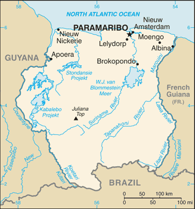
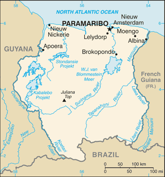

-
Introduction :: Suriname
-
Background:First explored by the Spaniards in the 16th century and then settled by the English in the mid-17th century, Suriname became a Dutch colony in 1667. With the abolition of African slavery in 1863, workers were brought in from India and Java. The Netherlands granted the colony independence in 1975. Five years later the civilian government was replaced by a military regime that soon declared Suriname a socialist republic. It continued to exert control through a succession of nominally civilian administrations until 1987, when international pressure finally forced a democratic election. In 1990, the military overthrew the civilian leadership, but a democratically elected government - a four-party coalition - returned to power in 1991. The coalition expanded to eight parties in 2005 and ruled until August 2010, when voters returned former military leader Desire BOUTERSE and his opposition coalition to power. President BOUTERSE was reelected unopposed in 2015.SURINAME SUMMARY: PDF
-
Geography :: Suriname
-
Location:Northern South America, bordering the North Atlantic Ocean, between French Guiana and GuyanaGeographic coordinates:4 00 N, 56 00 WMap references:South AmericaArea:total: 163,820 sq kmland: 156,000 sq kmwater: 7,820 sq kmcountry comparison to the world: 93Area - comparative:slightly larger than GeorgiaLand boundaries:total: 1,907 kmborder countries (3): Brazil 515 km, French Guiana 556 km, Guyana 836 kmCoastline:386 kmMaritime claims:territorial sea: 12 nmexclusive economic zone: 200 nmClimate:tropical; moderated by trade windsTerrain:mostly rolling hills; narrow coastal plain with swampsElevation:mean elevation: 246 melevation extremes: -2 m lowest point: unnamed location in the coastal plain1230 highest point: Juliana TopNatural resources:timber, hydropower, fish, kaolin, shrimp, bauxite, gold, and small amounts of nickel, copper, platinum, iron oreLand use:agricultural land: 0.5% (2011 est.)arable land: 0.4% (2011 est.) / permanent crops: 0% (2011 est.) / permanent pasture: 0.1% (2011 est.)forest: 94.6% (2011 est.)other: 4.9% (2011 est.)Irrigated land:570 sq km (2012)Population distribution:population concentrated along the nothern coastal strip; the remainder of the country is sparsely populatedNatural hazards:floodingEnvironment - current issues:deforestation as timber is cut for export; pollution of inland waterways by small-scale mining activitiesEnvironment - international agreements:party to: Biodiversity, Climate Change, Climate Change-Kyoto Protocol, Desertification, Endangered Species, Hazardous Wastes, Law of the Sea, Marine Dumping, Ozone Layer Protection, Ship Pollution, Tropical Timber 94, Wetlands, Whalingsigned, but not ratified: none of the selected agreementsGeography - note:smallest independent country on South American continent; mostly tropical rain forest; great diversity of flora and fauna that, for the most part, is increasingly threatened by new development; relatively small population, mostly along the coast
-
People and Society :: Suriname
-
Population:597,927 (July 2018 est.)country comparison to the world: 172Nationality:noun: Surinamer(s)adjective: SurinameseEthnic groups:Hindustani (also known locally as "East Indians"; their ancestors emigrated from northern India in the latter part of the 19th century) 27.4%, "Maroon" (their African ancestors were brought to the country in the 17th and 18th centuries as slaves and escaped to the interior) 21.7%, Creole (mixed white and black) 15.7%, Javanese 13.7%, mixed 13.4%, other 7.6%, unspecified 0.6% (2012 est.)Languages:Dutch (official), English (widely spoken), Sranang Tongo (Surinamese, sometimes called Taki-Taki, is the native language of Creoles and much of the younger population and is lingua franca among others), Caribbean Hindustani (a dialect of Hindi), JavaneseReligions:Protestant 23.6% (includes Evangelical 11.2%, Moravian 11.2%, Reformed .7%, Lutheran .5%), Hindu 22.3%, Roman Catholic 21.6%, Muslim 13.8%, other Christian 3.2%, Winti 1.8%, Jehovah's Witness 1.2%, other 1.7%, none 7.5%, unspecified 3.2% (2012 est.)Demographic profile:
Suriname is a pluralistic society consisting primarily of Creoles (persons of mixed African and European heritage), the descendants of escaped African slaves known as Maroons, and the descendants of Indian and Javanese (Indonesian) contract workers. The country overall is in full, post-industrial demographic transition, with a low fertility rate, a moderate mortality rate, and a rising life expectancy. However, the Maroon population of the rural interior lags behind because of lower educational attainment and contraceptive use, higher malnutrition, and significantly less access to electricity, potable water, sanitation, infrastructure, and health care.
Some 350,000 people of Surinamese descent live in the Netherlands, Suriname's former colonial ruler. In the 19th century, better-educated, largely Dutch-speaking Surinamese began emigrating to the Netherlands. World War II interrupted the outflow, but it resumed after the war when Dutch labor demands grew - emigrants included all segments of the Creole population. Suriname still is strongly influenced by the Netherlands because most Surinamese have relatives living there and it is the largest supplier of development aid. Other emigration destinations include French Guiana and the United States. Suriname's immigration rules are flexible, and the country is easy to enter illegally because rainforests obscure its borders. Since the mid-1980s, Brazilians have settled in Suriname's capital, Paramaribo, or eastern Suriname, where they mine gold. This immigration is likely to slowly re-orient Suriname toward its Latin American roots.
Age structure:0-14 years: 24.11% (male 73,466 /female 70,704)15-24 years: 17.36% (male 52,876 /female 50,913)25-54 years: 44.42% (male 135,282 /female 130,327)55-64 years: 7.94% (male 23,377 /female 24,085)65 years and over: 6.17% (male 16,019 /female 20,878) (2018 est.)population pyramid: The World Factbook Field Image ModalSouth America :: Suriname Print
The World Factbook Field Image ModalSouth America :: Suriname Print Image DescriptionThis is the population pyramid for Suriname. A population pyramid illustrates the age and sex structure of a country's population and may provide insights about political and social stability, as well as economic development. The population is distributed along the horizontal axis, with males shown on the left and females on the right. The male and female populations are broken down into 5-year age groups represented as horizontal bars along the vertical axis, with the youngest age groups at the bottom and the oldest at the top. The shape of the population pyramid gradually evolves over time based on fertility, mortality, and international migration trends.
Image DescriptionThis is the population pyramid for Suriname. A population pyramid illustrates the age and sex structure of a country's population and may provide insights about political and social stability, as well as economic development. The population is distributed along the horizontal axis, with males shown on the left and females on the right. The male and female populations are broken down into 5-year age groups represented as horizontal bars along the vertical axis, with the youngest age groups at the bottom and the oldest at the top. The shape of the population pyramid gradually evolves over time based on fertility, mortality, and international migration trends.
For additional information, please see the entry for Population pyramid on the Definitions and Notes page under the References tab.Dependency ratios:total dependency ratio: 50.7 (2015 est.)youth dependency ratio: 40.6 (2015 est.)elderly dependency ratio: 10.1 (2015 est.)potential support ratio: 9.9 (2015 est.)Median age:total: 30.2 yearsmale: 29.8 yearsfemale: 30.6 years (2018 est.)country comparison to the world: 118Population growth rate:1% (2018 est.)country comparison to the world: 108Birth rate:15.6 births/1,000 population (2018 est.)country comparison to the world: 117Death rate:6.1 deaths/1,000 population (2018 est.)country comparison to the world: 161Net migration rate:0.6 migrant(s)/1,000 population (2017 est.)country comparison to the world: 62Population distribution:population concentrated along the nothern coastal strip; the remainder of the country is sparsely populatedUrbanization:urban population: 66.1% of total population (2018)rate of urbanization: 0.9% annual rate of change (2015-20 est.)Major urban areas - population:239,000 PARAMARIBO (capital) (2018)Sex ratio:at birth: 1.04 male(s)/female (2017 est.)0-14 years: 1.04 male(s)/female (2017 est.)15-24 years: 1.04 male(s)/female (2017 est.)25-54 years: 1.04 male(s)/female (2017 est.)55-64 years: 0.96 male(s)/female (2017 est.)65 years and over: 0.76 male(s)/female (2017 est.)total population: 1.01 male(s)/female (2017 est.)Maternal mortality rate:155 deaths/100,000 live births (2015 est.)country comparison to the world: 59Infant mortality rate:total: 23.7 deaths/1,000 live births (2018 est.)male: 27.6 deaths/1,000 live births (2018 est.)female: 19.5 deaths/1,000 live births (2018 est.)country comparison to the world: 69Life expectancy at birth:total population: 72.8 years (2018 est.)male: 70.3 years (2018 est.)female: 75.3 years (2018 est.)country comparison to the world: 146Total fertility rate:1.9 children born/woman (2018 est.)country comparison to the world: 133Contraceptive prevalence rate:47.6% (2010)Health expenditures:5.7% of GDP (2014)country comparison to the world: 117Hospital bed density:3.1 beds/1,000 population (2010)Drinking water source:improved: urban: 98.1% of populationrural: 88.4% of populationtotal: 94.8% of populationunimproved: urban: 1.9% of populationrural: 11.6% of populationtotal: 5.2% of population (2015 est.)Sanitation facility access:improved: urban: 88.4% of population (2015 est.)rural: 61.4% of population (2015 est.)total: 79.2% of population (2015 est.)unimproved: urban: 11.6% of population (2015 est.)rural: 38.6% of population (2015 est.)total: 20.8% of population (2015 est.)HIV/AIDS - adult prevalence rate:1.3% (2017 est.)country comparison to the world: 38HIV/AIDS - people living with HIV/AIDS:4,800 (2017 est.)country comparison to the world: 117HIV/AIDS - deaths:<200 (2017 est.)Major infectious diseases:degree of risk: very high (2016)food or waterborne diseases: bacterial and protozoal diarrhea, hepatitis A, and typhoid fever (2016)vectorborne diseases: dengue fever and malaria (2016)note: active local transmission of Zika virus by Aedes species mosquitoes has been identified in this country (as of August 2016); it poses an important risk (a large number of cases possible) among US citizens if bitten by an infective mosquito; other less common ways to get Zika are through sex, via blood transfusion, or during pregnancy, in which the pregnant woman passes Zika virus to her fetus
Obesity - adult prevalence rate:26.4% (2016)country comparison to the world: 42Children under the age of 5 years underweight:5.8% (2010)country comparison to the world: 78Education expenditures:NALiteracy:definition: age 15 and over can read and write (2015 est.)total population: 95.6% (2015 est.)male: 96.1% (2015 est.)female: 95% (2015 est.)Unemployment, youth ages 15-24:total: 13.4% (2015 est.)male: 9% (2015 est.)female: 21.9% (2015 est.)country comparison to the world: 100 -
Government :: Suriname
-
Country name:conventional long form: Republic of Surinameconventional short form: Surinamelocal long form: Republiek Surinamelocal short form: Surinameformer: Netherlands Guiana, Dutch Guianaetymology: name may derive from the indigenous "Surinen" people who inhabited the area at the time of European contactGovernment type:presidential republicCapital:name: Paramaribogeographic coordinates: 5 50 N, 55 10 Wtime difference: UTC-3 (2 hours ahead of Washington, DC, during Standard Time)Administrative divisions:10 districts (distrikten, singular - distrikt); Brokopondo, Commewijne, Coronie, Marowijne, Nickerie, Para, Paramaribo, Saramacca, Sipaliwini, WanicaIndependence:25 November 1975 (from the Netherlands)National holiday:Independence Day, 25 November (1975)Constitution:history: previous 1975; latest ratified 30 September 1987, effective 30 October 1987 (2018)amendments: proposed by the National Assembly; passage requires at least two-thirds majority vote of the total membership; amended 1992 (2018)Legal system:civil law system influenced by Dutch civil law; note - the Commissie Nieuw Surinaamse Burgerlijk Wetboek completed drafting a new civil code in February 2009International law organization participation:accepts compulsory ICJ jurisdiction with reservations; accepts ICCt jurisdictionCitizenship:citizenship by birth: nocitizenship by descent only: at least one parent must be a citizen of Surinamedual citizenship recognized: noresidency requirement for naturalization: 5 yearsSuffrage:18 years of age; universalJudicial branch:highest courts: High Court of Justice of Suriname (consists of the court president, vice president, and 4 judges); note - appeals beyond the High Court are referred to the Caribbean Court of Justice; human rights violations can be appealed to the Inter-American Commission on Human Rights with judgments issued by the Inter-American Court on Human Rightsjudge selection and term of office: court judges appointed by the national president in consultation with the National Assembly, the State Advisory Council, and the Order of Private Attorneys; judges serve for lifesubordinate courts: cantonal courtsExecutive branch:chief of state: President Desire Delano BOUTERSE (since 12 August 2010); Vice President Ashwin ADHIN (since 12 August 2015); note - the president is both chief of state and head of governmenthead of government: President Desire Delano BOUTERSE (since 12 August 2010); Vice President Ashwin ADHIN (since 12 August 2015)cabinet: Cabinet of Ministers appointed by the presidentelections/appointments: president and vice president indirectly elected by the National Assembly; president and vice president serve a 5-year term (no term limits); election last held on 25 May 2015 (next to be held in May 2020)election results: Desire Delano BOUTERSE reelected president unopposed; National Assembly vote - NALegislative branch:description: unicameral National Assembly or Nationale Assemblee (51 seats; members directly elected in multi-seat constituencies by party-list proportional representation vote to serve 5-year terms)elections: last held on 25 May 2015 (next to be held in May 2020)election results: percent of vote by party - NDP 45.5%, V7 37.2%, A-Com 10.5%, DOE 4.3%, PALU 0.7%, other 1.8%; seats by party - NDP 26, V7 18, A-Com 5, DOE 1, PALU 1;
note: seats by party as of April 2017 - seats by party - NDP 26, VHP 9, ABOP 5, PL 3, NPS 2, BEP 2, DOE 1, PALU 1, independent 2
Political parties and leaders:Alternative Combination or A-Com (coalition includes ABOP, KTPI, Party for Democracy and Development)
Brotherhood and Unity in Politics or BEP [Celsius WATERBERG]
Democratic Alternative '91 or DA91 [Angelique DEL CASTILLO]
General Liberation and Development Party or ABOP [Ronnie BRUNSWIJK}
National Democratic Party or NDP [Desire Delano BOUTERSE]
National Party of Suriname or NPS [Gregory RUSLAND]
Party for Democracy and Development in Unity or DOE [Carl BREEVELD]
Party for National Unity and Solidarity or KTPI [Willy SOEMITA]
People's Alliance (Pertjaja Luhur) or PL [Paul SOMOHARDJO]
Progressive Workers' and Farmers' Union or PALU [Jim HOK]
Surinamese Labor Party or SPA [Guno CASTELEN]
Progressive Reform Party or VHP [Chandrikapersad SANTOKHI]
Victory 7 or V7 [Chandrikapresad SANTOKHI] (formerly the New Front for Democracy and Development or NF; an electoral coalition of NPS, VHP, DA91, PL, SPA formed only for the May 2015 election)International organization participation:ACP, AOSIS, Caricom, CD, CDB, CELAC, FAO, G-77, IADB, IBRD, ICAO, ICCt, ICRM, IDA, IDB, IFAD, IFC, IFRCS, IHO, ILO, IMF, IMO, Interpol, IOC, IOM, IPU, ISO (correspondent), ITU, ITUC (NGOs), LAES, MIGA, NAM, OAS, OIC, OPANAL, OPCW, PCA, Petrocaribe, UN, UNASUR, UNCTAD, UNESCO, UNIDO, UPU, WHO, WIPO, WMO, WTODiplomatic representation in the US:chief of mission: Ambassador Niermala Sakoentala BADRISING (since 21 July 2017)chancery: Suite 460, 4301 Connecticut Avenue NW, Washington, DC 20008telephone: [1] (202) 244-7488FAX: [1] (202) 244-5878consulate(s) general: MiamiDiplomatic representation from the US:chief of mission: Ambassador Edwin "Ned" Richard NOLAN, Jr.(since 11 January 2016)embassy: 165 Kristalstraat, Paramaribomailing address: US Department of State, PO Box 1821, Paramaribotelephone: [597] 472-900FAX: [597] 410-972Flag description:five horizontal bands of green (top, double width), white, red (quadruple width), white, and green (double width); a large, yellow, five-pointed star is centered in the red band; red stands for progress and love, green symbolizes hope and fertility, white signifies peace, justice, and freedom; the star represents the unity of all ethnic groups; from its yellow light the nation draws strength to bear sacrifices patiently while working toward a golden futureNational symbol(s):royal palm, faya lobi (flower); national colors: green, white, red, yellowNational anthem:name: "God zij met ons Suriname!" (God Be With Our Suriname)lyrics/music: Cornelis Atses HOEKSTRA and Henry DE ZIEL/Johannes Corstianus DE PUYnote: adopted 1959; originally adapted from a Sunday school song written in 1893 and contains lyrics in both Dutch and Sranang Tongo
-
Economy :: Suriname
-
Economy - overview:
Suriname’s economy is dominated by the mining industry, with exports of oil and gold accounting for approximately 85% of exports and 27% of government revenues. This makes the economy highly vulnerable to mineral price volatility. The worldwide drop in international commodity prices and the cessation of alumina mining in Suriname significantly reduced government revenue and national income during the past few years. In November 2015, a major US aluminum company discontinued its mining activities in Suriname after 99 years of operation. Public sector revenues fell, together with exports, international reserves, employment, and private sector investment.
Economic growth declined annually from just under 5% in 2012 to -10.4% in 2016. In January 2011, the government devalued the currency by 20% and raised taxes to reduce the budget deficit. Suriname began instituting macro adjustments between September 2015 and 2016; these included another 20% currency devaluation in November 2015 and foreign currency interventions by the Central Bank until March 2016, after which time the Bank allowed the Surinamese dollar (SRD) to float. By December 2016, the SRD had lost 46% of its value against the dollar. Depreciation of the Surinamese dollar and increases in tariffs on electricity caused domestic prices in Suriname to rise 22.0% year-over-year by December 2017.
Suriname's economic prospects for the medium-term will depend on its commitment to responsible monetary and fiscal policies and on the introduction of structural reforms to liberalize markets and promote competition. The government's over-reliance on revenue from the extractive sector colors Suriname's economic outlook. Following two years of recession, the Fitch Credit Bureau reported a positive growth of 1.2% in 2017 and the World Bank predicted 2.2% growth in 2018. Inflation declined to 9%, down from 55% in 2016 , and increased gold production helped lift exports. Yet continued budget imbalances and a heavy debt and interest burden resulted in a debt-to-GDP ratio of 83% in September 2017. Purchasing power has fallen rapidly due to the devalued local currency. The government has announced its intention to pass legislation to introduce a new value-added tax in 2018. Without this and other measures to strengthen the country’s fiscal position, the government may face liquidity pressures.
GDP (purchasing power parity):$8.688 billion (2017 est.)$8.526 billion (2016 est.)$8.988 billion (2015 est.)note: data are in 2017 dollars
country comparison to the world: 162GDP (official exchange rate):$3.419 billion (2017 est.) (2017 est.)GDP - real growth rate:1.9% (2017 est.)-5.1% (2016 est.)-2.6% (2015 est.)country comparison to the world: 159GDP - per capita (PPP):$14,900 (2017 est.)$14,800 (2016 est.)$15,900 (2015 est.)note: data are in 2017 dollars
country comparison to the world: 114Gross national saving:46.6% of GDP (2017 est.)55.6% of GDP (2016 est.)53.6% of GDP (2015 est.)country comparison to the world: 4GDP - composition, by end use:household consumption: 27.6% (2017 est.)government consumption: 11.7% (2017 est.)investment in fixed capital: 52.5% (2017 est.)investment in inventories: 26.5% (2017 est.)exports of goods and services: 68.9% (2017 est.)imports of goods and services: -60.6% (2017 est.)GDP - composition, by sector of origin:agriculture: 11.6% (2017 est.)industry: 31.1% (2017 est.)services: 57.4% (2017 est.)Agriculture - products:rice, bananas, seabob shrimp, yellow-fin tuna, vegetablesIndustries:gold mining, oil, lumber, food processing, fishingIndustrial production growth rate:1% (2017 est.)country comparison to the world: 158Labor force:144,000 (2014 est.)country comparison to the world: 177Labor force - by occupation:agriculture: 11.2%industry: 19.5%services: 69.3% (2010)Unemployment rate:8.9% (2017 est.)9.7% (2016 est.)country comparison to the world: 129Population below poverty line:70% (2002 est.)Budget:revenues: 560.7 million (2017 est.)expenditures: 827.8 million (2017 est.)Taxes and other revenues:16.4% (of GDP) (2017 est.)country comparison to the world: 182Budget surplus (+) or deficit (-):-7.8% (of GDP) (2017 est.)country comparison to the world: 197Public debt:69.3% of GDP (2017 est.)75.8% of GDP (2016 est.)country comparison to the world: 52Fiscal year:calendar yearInflation rate (consumer prices):22% (2017 est.)55.5% (2016 est.)country comparison to the world: 216Central bank discount rate:10% (2013)9% (2012)country comparison to the world: 24Commercial bank prime lending rate:14.43% (31 December 2017 est.)13.49% (31 December 2016 est.)country comparison to the world: 46Stock of narrow money:$1.158 billion (31 December 2017 est.)$921.8 million (31 December 2016 est.)country comparison to the world: 154Stock of broad money:$1.158 billion (31 December 2017 est.)$921.8 million (31 December 2016 est.)country comparison to the world: 159Stock of domestic credit:$1.608 billion (31 December 2017 est.)$1.404 billion (31 December 2016 est.)country comparison to the world: 159Current account balance:-$2 million (2017 est.)-$169 million (2016 est.)country comparison to the world: 69Exports:$2.028 billion (2017 est.)$1.449 billion (2016 est.)country comparison to the world: 140Exports - partners:Switzerland 38%, Hong Kong 21.9%, Belgium 10.1%, UAE 7.2%, Guyana 6.1% (2017)Exports - commodities:alumina, gold, crude oil, lumber, shrimp and fish, rice, bananasImports:$1.293 billion (2017 est.)$1.203 billion (2016 est.)country comparison to the world: 176Imports - commodities:capital equipment, petroleum, foodstuffs, cotton, consumer goodsImports - partners:US 30.6%, Netherlands 14.8%, Trinidad and Tobago 11.4%, China 7.6% (2017)Reserves of foreign exchange and gold:$424.4 million (31 December 2017 est.)$381.1 million (31 December 2016 est.)country comparison to the world: 158Debt - external:$1.7 billion (31 December 2017 est.)$1.436 billion (31 December 2016 est.)country comparison to the world: 156Stock of direct foreign investment - at home:(31 December 2009 est.)Exchange rates:Surinamese dollars (SRD) per US dollar -7.53 (2017 est.)6.229 (2016 est.)6.229 (2015 est.)3.4167 (2014 est.)3.3 (2013 est.) -
Energy :: Suriname
-
Electricity access:electrification - total population: 100% (2016)Electricity - production:1.967 billion kWh (2016 est.)country comparison to the world: 138Electricity - consumption:1.75 billion kWh (2016 est.)country comparison to the world: 144Electricity - exports:0 kWh (2016 est.)country comparison to the world: 204Electricity - imports:0 kWh (2016 est.)country comparison to the world: 206Electricity - installed generating capacity:504,000 kW (2016 est.)country comparison to the world: 149Electricity - from fossil fuels:61% of total installed capacity (2016 est.)country comparison to the world: 129Electricity - from nuclear fuels:0% of total installed capacity (2017 est.)country comparison to the world: 189Electricity - from hydroelectric plants:38% of total installed capacity (2017 est.)country comparison to the world: 56Electricity - from other renewable sources:2% of total installed capacity (2017 est.)country comparison to the world: 145Crude oil - production:17,000 bbl/day (2017 est.)country comparison to the world: 68Crude oil - exports:0 bbl/day (2015 est.)country comparison to the world: 200Crude oil - imports:820 bbl/day (2015 est.)country comparison to the world: 80Crude oil - proved reserves:84.2 million bbl (1 January 2018 est.)country comparison to the world: 70Refined petroleum products - production:7,571 bbl/day (2015 est.)country comparison to the world: 101Refined petroleum products - consumption:13,000 bbl/day (2016 est.)country comparison to the world: 157Refined petroleum products - exports:14,000 bbl/day (2015 est.)country comparison to the world: 74Refined petroleum products - imports:10,700 bbl/day (2015 est.)country comparison to the world: 145Natural gas - production:0 cu m (2017 est.)country comparison to the world: 202Natural gas - consumption:0 cu m (2017 est.)country comparison to the world: 203Natural gas - exports:0 cu m (2017 est.)country comparison to the world: 191Natural gas - imports:0 cu m (2017 est.)country comparison to the world: 194Natural gas - proved reserves:0 cu m (1 January 2011 est.)country comparison to the world: 198Carbon dioxide emissions from consumption of energy:2.075 million Mt (2017 est.)country comparison to the world: 159
-
Communications :: Suriname
-
Telephones - fixed lines:total subscriptions: 89,030 (2017 est.)subscriptions per 100 inhabitants: 15 (2017 est.)country comparison to the world: 143Telephones - mobile cellular:total subscriptions: 795,871 (2017 est.)subscriptions per 100 inhabitants: 134 (2017 est.)country comparison to the world: 162Telephone system:general assessment: international facilities are good (2017)domestic: combined fixed-line and mobile-cellular teledensity exceeds 150 telephones per 100 persons; microwave radio relay network is in place (2017)international: country code - 597; satellite earth stations - 2 Intelsat (Atlantic Ocean) (2017)Broadcast media:2 state-owned TV stations; 1 state-owned radio station; multiple private radio and TV stations (2007)Internet country code:.srInternet users:total: 265,964 (July 2016 est.)percent of population: 45.4% (July 2016 est.)country comparison to the world: 163Broadband - fixed subscriptions:total: 71,217 (2017 est.)subscriptions per 100 inhabitants: 12 (2017 est.)country comparison to the world: 125
-
Transportation :: Suriname
-
National air transport system:number of registered air carriers: 2 (2015)inventory of registered aircraft operated by air carriers: 5 (2015)annual passenger traffic on registered air carriers: 259,682 (2015)annual freight traffic on registered air carriers: 29,324,319 mt-km (2015)Civil aircraft registration country code prefix:PZ (2016)Airports:55 (2013)country comparison to the world: 86Airports - with paved runways:total: 6 (2013)over 3,047 m: 1 (2013)under 914 m: 5 (2013)Airports - with unpaved runways:total: 49 (2013)914 to 1,523 m: 4 (2013)under 914 m: 45 (2013)Pipelines:50 km oil (2013)Roadways:total: 4,304 km (2003)paved: 1,130 km (2003)unpaved: 3,174 km (2003)country comparison to the world: 154Waterways:1,200 km (most navigable by ships with drafts up to 7 m) (2011)country comparison to the world: 59Merchant marine:total: 10 (2017)by type: general cargo 5, oil tanker 3, other 2 (2017)country comparison to the world: 149Ports and terminals:major seaport(s): Paramaribo, Wageningen
-
Military and Security :: Suriname
-
Military branches:Suriname Army (National Leger, NL): Army, Coast Guard, Air Force (2017)Military service age and obligation:18 is the legal minimum age for voluntary military service; no conscription; personnel drawn almost exclusively from the Creole community (2012)
-
Transnational Issues :: Suriname
-
Disputes - international:area claimed by French Guiana between Riviere Litani and Riviere Marouini (both headwaters of the Lawa)Suriname claims a triangle of land between the New and Kutari/Koetari rivers in a historic dispute over the headwaters of the CourantyneGuyana seeks UN Convention on the Law of the Sea arbitration to resolve the longstanding dispute with Suriname over the axis of the territorial sea boundary in potentially oil-rich watersTrafficking in persons:current situation: Suriname is a source, transit, and destination country for women and children subjected to sex trafficking and men, women, and children subjected to forced labor; women and girls from Suriname, Guyana, Brazil, and the Dominican Republic are subjected to sex trafficking in the country, sometimes in interior mining camps; migrant workers in agriculture and on fishing boats and children working in informal urban sectors and gold mines are vulnerable to forced labor; traffickers from Suriname exploit victims in the Netherlandstier rating: Tier 2 Watch List – Suriname does not fully comply with the minimum standards for the elimination of trafficking; however, it is making significant efforts to do so; in 2014, Suriname was granted a waiver from an otherwise required downgrade to Tier 3 because its government has a written plan that, if implemented, would constitute making significant efforts to bring itself into compliance with the minimum standards for the elimination of trafficking; authorities increased the number of trafficking investigations, prosecutions, and convictions as compared to 2013, but resources were insufficient to conduct investigations in the country’s interior; more trafficking victims were identified in 2014 than in 2013, but protective services for adults and children were inadequate, with a proposed government shelter for women and child trafficking victims remaining unopened (2015)Illicit drugs:growing transshipment point for South American drugs destined for Europe via the Netherlands and Brazil; transshipment point for arms-for-drugs dealing
South America ::
Suriname